《现代艺术150年》
返回顶部
序：多么陈旧啊，150年过去了 (陈丹青)
001 前 言
005 导论：你在看什么
1、卡尔·安德烈（Carl Andre）生于1935年9月16日，是美国当代艺术家，极简主义艺术的代表人物之一。
卡尔·安德烈的《等价物8》（Equivalent VIII）1966

2、杰夫·昆斯 (Jeff
Koons)生于1955年1月21日，是美国当代著名的波普艺术家。1992年德国巴特阿罗尔森委托昆斯为一个艺术展做一个作品。昆斯最终的作品是小狗Puppy，一个143英尺(12.4米)高，用灌木修剪法在钢架结构上使用各种花卉制作而成的西部高地白梗幼犬雕塑。1995年，这个雕塑被拆除后，昆斯在悉尼海港的当代艺术博物馆重建了一个新的Puppy，使用了更新型、更持久的不锈钢内部电枢灌溉系统。1997年，所罗门古根海姆基金会（Solomon
R. Guggenheim Foundation）购买了这部作品，并安置在毕尔巴鄂的古根海姆博物馆（Guggenheim Museum Bilbao）外面的广场上。
毕尔巴鄂古根海姆博物馆广场的《小狗 Puppy》

013 第一章 泉，1917
027 第二章 前印象派：走向真实，1820—1870
克劳德・莫奈 (Claude Monet)，1840-1926。法国画家、印象派代表人物及创始人之一。“印象”一词即来自他的画作《印象・日出》。莫奈擅长光与影的实验与表现技法，对于色彩的运用相当细腻。
藏于东京国立西方美术博物馆的莫奈的《睡莲》1916
1、泰奥多尔・席里柯 (Theodore Gericault)，也有译成西奥・多杰里科，1791-1824，法国浪漫主义画派的先驱，对浪漫主义画派和现实主义画派的发展有重要影响。
席里柯的《美杜莎之筏》1818-1819
2、欧仁・德拉克洛瓦 (Eugene Delacroix), 1798-1863，法国著名浪漫主义画家。
德拉克洛瓦的《自由引导人民》1830，书中彩图1
3、古斯塔夫・库尔贝 (Gustav Courbet)，1819-1877，法国著名画家，现实主义画派创始人，主张艺术应以现实为依据，反对粉饰生活。
库尔贝的《三个年轻英国女人》1865
爱德华・马奈 (Eduard Manet), 1832-1883，出生在法国巴黎的写实派与印象派之父。
《喝苦艾酒的人》1859
《草地上的午餐》1863
《草地上的午餐》实拍
拉斐尔《帕利斯的审判》
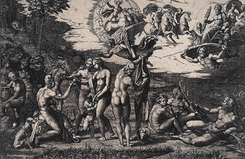
乔尔乔内提香《田园音乐会》约1510
《奥林匹亚》1863

051 第三章 印象派：现代生活的画家，1870—1890
克劳德・莫奈 (Claude Monet)，1840-1926，法国画家，印象派代表人物及创始人之一。印象派的“印象”一词来自他的画作《印象・日出》。
《印象・日出》（Impression Sunrise）1872－书中彩图3

保罗・塞尚的《现代奥林匹亚》与爱德华・马奈的《奥林匹亚》
保罗・塞尚的《现代奥林匹亚》1873-1874
爱德华・马奈的《奥林匹亚》1863
卡米耶・毕沙罗 (Camile Pissarro)，1830-1903，丹麦裔法国画家，印象派画家中的中心人物，性情和蔼、善良，擅长风景画，人像画也有特殊的风格。
卡米耶・毕沙罗的《白霜，通往埃纳里的老路》1873
莫奈和雷诺阿的《青蛙塘》
莫奈的《青蛙塘》1869
雷诺阿的《青蛙塘》1869
约瑟夫・玛罗德・威廉・特纳（J. M. W. Turner），1775-1851，英国浪漫主义风景画家、水彩画家和版画家。他的作品对后期印象派绘画发展有很大影响。
特纳的《雨、蒸汽和速度》1844－书中彩图4
莫奈的《威斯敏斯特下的泰晤士河》1871
特纳的《议会大厦的大火》1834-1835
葛饰北斋的《神奈川巨浪》1830-1832
安藤广重的《大津站》1848-1849
爱德加・德加（Edgar Degas），1834-1917，出生于法国巴黎，印象派画家、雕塑家。
爱德加・德加的《舞蹈课》1874
德加的《赛马场上的马车》1869-1872
075 第四章 后印象派：拓展领域，1880—1906
文森特・梵高 (Vincent Van Gogh)，1853-1890。荷兰后印象派画家，表现主义的先驱，深深影响了二十世纪艺术。
《星空》1889－书中彩图5
《吃土豆的人》1885
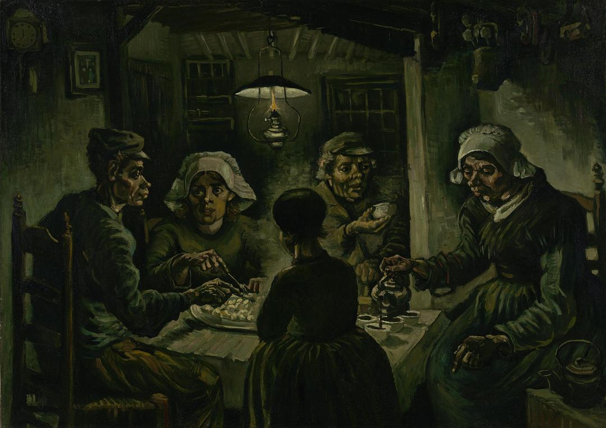
《寝室》1888
《去往塔拉斯孔路上的画家》1888
弗朗西斯·培根《向梵高致敬》1985
弗朗西斯·培根的《临摹委拉斯开兹的〈教皇英诺森十世肖像〉习作》1953
爱德华·蒙克的《呐喊》1893
保罗・高更 (Paul Gauguin)，1848-1903，生于法国巴黎，印象派的代表人物，大部分艺术史家把他归为后印象派。他死后作品才开始名声大噪。
《布道后的幻象》1888
《你为何生气？》1896
乔治・修拉 (Georges Seurat)，1859-1891，后印象派（也称新印象派）的重要人物，点彩画派的代表人物。
《阿尼埃尔的浴场》 1884

《大碗岛的星期天下午》 1884-1886

107 第五章 塞尚: 吾人之父，1839—1906
保罗・塞尚 (Paul
Cezanne)，1839-1906，著名法国画家，绘画风格介于印象派到立体主义画派之间。他的作品为19世纪的艺术观念转换到20世纪的艺术风格奠定了基础。他的作品对马蒂斯和毕加索产生了重要影响，常被艺术史学家们称为“现代艺术之父”。
《有苹果和桃子的静物》1905－书中彩图9
《玩纸牌的人》1892
《圣维克多山》1887－书中彩图10
《大浴女》1892
123 第六章 原始主义，1880—1930 / 野兽派，1905—1910：原始的呐喊
古斯塔夫・克利姆特 (Gustav Klimt)，1862-1918，生于维也纳，是奥地利著名象征主义画家。
古斯塔夫・克利姆特《吻》

安德烈・德兰 (Andre Derain)，1880-1954，法国画家，二十世纪初期艺术革命的先驱之一，和亨利・马蒂斯一切创建了野兽派。
安德烈·德兰《科利乌尔港的船》1905
莫里斯・德・弗拉芒克 (Maurice de Vlaminck)， 1876-1958，法国画家。他开始是印象派成员，后经安德烈・德兰介绍，加入了野兽派，并成为该流派的主要代表之一。
弗拉芒克《布吉瓦尔的餐馆》1905

亨利・马蒂斯 (Henri Matisse)，1869-1954，著名法国画家、雕塑家及版画家，野兽派创始人、领袖及主要代表人物。
《戴帽子的妇人》1905
《生之欢乐》1905-1906-书中彩图11
巴勃罗・毕加索 (Pablo Picasso)，1881-1973， 西班牙著名画家、雕塑家、版画家、陶艺家、舞台设计师及作家。毕加索和乔治・布拉克同为立体主义的创始人，是二十世纪现代艺术的主要代表人物。
《格特鲁德·斯泰因肖像》1905-1906
《亚维农的少女》1907－书中彩图13

亨利・卢梭 (Henri Rousseau)，1844-1910，法国后印象派画家，以纯真、原始的风格著称，是自学成才的天才画家。
《狂欢节之夜》1886
《饿狮猛扑羚羊》1905-书中彩图12
《一个女人的肖像》1895
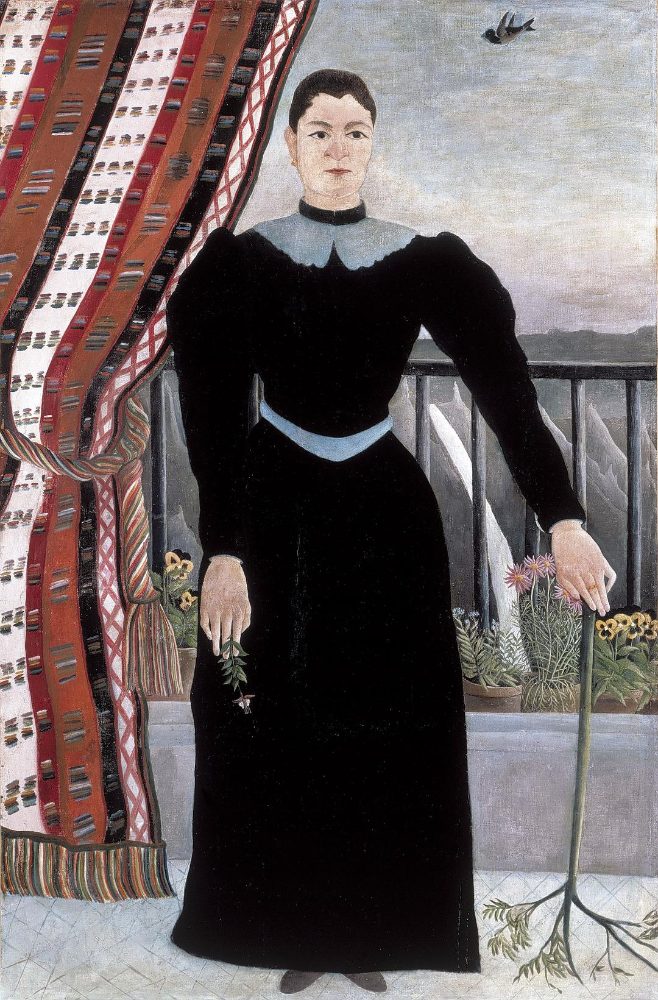
奥古斯特·罗丹《吻》1882
康斯坦丁·布朗库西《吻》1907-1908
康斯坦丁·布朗库西《沉睡的缪斯》1909-1910
阿梅代奥·莫迪利亚尼《头》1910-1912
阿尔伯托·贾科梅蒂《行走的人1》1960
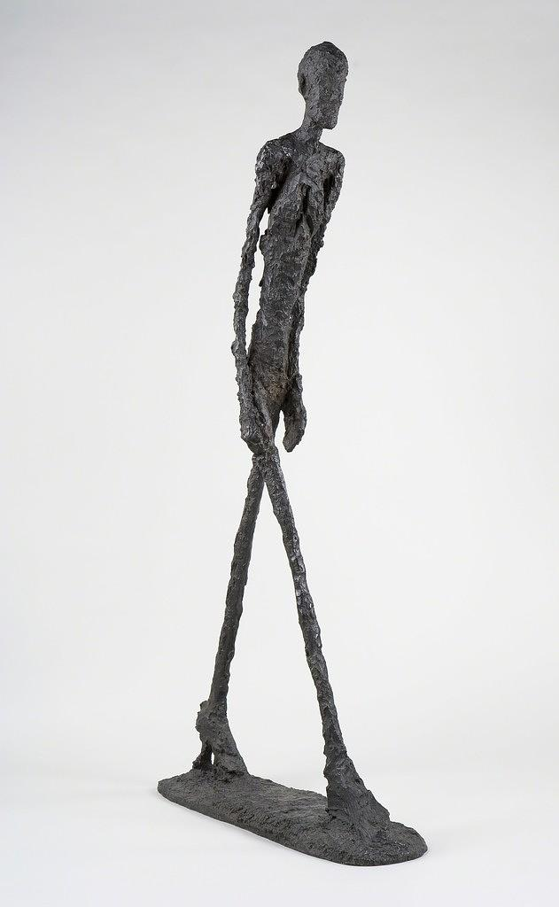
阿尔伯托·贾科梅蒂《勺形女人》1927
芭芭拉·赫普沃斯《穿孔之形》1931
芭芭拉·赫普沃斯《海洋生物》1946
芭芭拉·赫普沃斯《单一的形式》1961
155 第七章 立体主义：另一种视角，1907—1914
巴勃罗·毕加索《亚维农的少女》1907-书中彩图13
埃尔·格列柯《揭开第五印》1608
乔治·布拉克《埃斯塔克的房子》1908
乔治·布拉克《小提琴与调色板》1909
胡安·格里斯《静物花卉》1912
巴勃罗·毕加索《我的美人》1912
巴勃罗·毕加索《有藤椅的静物》1912
乔治·布拉克《水果盘与玻璃杯》1912
德加《小舞女》1880-1881
巴勃罗·毕加索《吉他》1912
177 第八章 未来主义：快进，1909—1919
贾科莫·巴拉《拴着皮带的狗的动态》1912
翁贝托·薄丘尼《空间中连续的唯一形体》1913
翁贝托·薄丘尼《心境：离开的人》1911
翁贝托·薄丘尼《心境1：告别》1911－书中彩图14
翁贝托·薄丘尼《心境3：留下的人》1911
罗伯特·德劳内《加迪夫队》1912-1913
雅各·爱泼斯坦《凿岩机》1913-1915
193 第九章 康定斯基/ 俄耳甫斯主义/ 青骑士：音乐之声，1910—1914
弗朗齐歇克·库普卡《第一步》1910

罗伯特·德劳内《共时的圆盘》1912
瓦西里·康定斯基《慕尼黑——普拉内格1》1901
瓦西里·康定斯基《穆尔瑙，乡村道路》1908
瓦西里·康定斯基《科黑尔，笔直的路》1909
瓦西里·康定斯基《即兴4》1909
瓦西里·康定斯基《印象3（音乐会）》1911
瓦西里·康定斯基《带圆的画》1911
瓦西里·康定斯基《作曲4》1911
瓦西里·康定斯基《作曲7》1913－书中彩图15
保罗·克利《哈马马特的清真寺》1914
211 第十章 至上主义/ 构成主义：俄国人，1915—1925
卡济米尔·马列维奇《奶牛与小提琴》1913
卡济米尔·马列维奇《黑色正方形》1915

卡济米尔·马列维奇《至上主义》1915
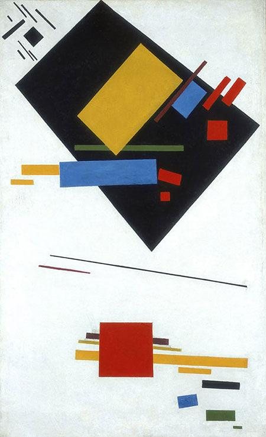
弗拉基米尔·塔特林《角落的反浮雕》1914
弗拉基米尔·塔特林《塔特林之塔～纪念第三国际》1919-1920
亚历山大·罗琴科《纯红、纯黄和纯蓝》1921
柳博芙·波波娃的时髦连衣裙 1923-1924

亚历山大·罗琴科为列夫·托洛茨基的书《日常生活之问题》设计的封面1923
埃尔·利西茨基《以红锲攻打白军》1919
237 第十一章 新造型主义：网格，1917—1931
皮埃特·蒙特里安《构成C（第 3号），红黄蓝》1935－书中彩图18

皮埃特·蒙特里安《夜晚，红树》1908
皮埃特·蒙特里安《灰色的树》1912
皮埃特·蒙特里安《开花的苹果树》1912
皮埃特·蒙特里安《画面2/构成7》1913
皮埃特·蒙特里安《构成6》1914
赫里特·里特费尔德的“红蓝椅”1923－书中彩图19
赫里特·里特费尔德的 “施罗德住宅”1924

登上法国《时尚》杂志的伊夫·圣·罗兰设计的无袖宽松羊毛连衣裙 1965

皮埃特·蒙特里安《构成第1号》1920
皮埃特·蒙特里安《红黄蓝黑构成》1921
253 第十二章 包豪斯：校园重聚，1919—1933
277 第十三章 达达主义：混乱的秩序，1916—1923
莫瑞吉奥·卡特兰的第九时辰 1999

让·阿尔普《根据随机法则排布的正方形的拼贴画》1916-1917
库尔特·施维特斯《旋转》1919
库尔特·施维特斯的梅尔兹堡 1933

马塞尔·杜尚《三个标准的终止》1913-1914
马塞尔·杜尚《L.H.O.O.Q.》1919
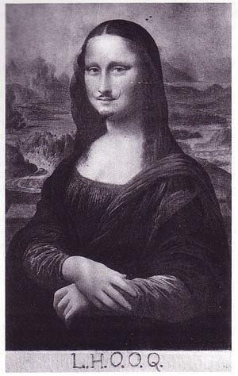
马塞尔·杜尚的美丽气息 1921

297 第十四章 超现实主义：以梦为生，1924—1945
路易丝·布尔乔亚《妈妈》1999
杰夫昆斯－小狗
巴勃罗·毕加索《三个舞蹈者》1925
胡安·米罗《小丑的狂欢夜》1924-1925
马克斯·恩斯特《西里伯斯》1921
马克斯·恩斯特《森林与鸽子》1927
萨尔瓦多·达利《记忆的永恒》1931
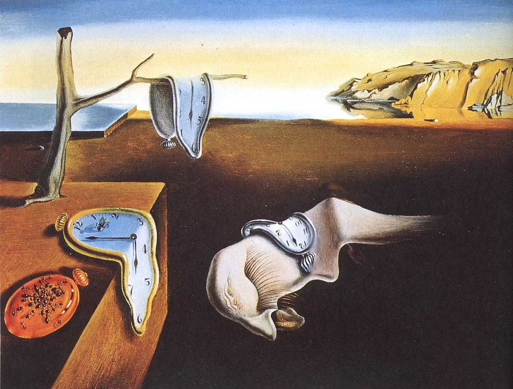
勒内·马格里特《受威胁的暗杀者》1927

乔治·德·基里科《爱之歌》1914
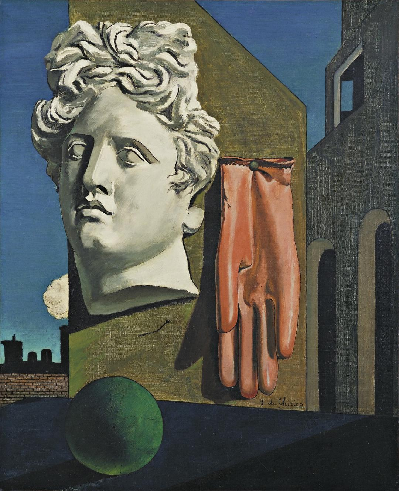
爱德华·霍普《夜鹰》1942
曼·雷－乐谱架《无题雷摄影，1927》
曼·雷－香烟和火柴《无题雷摄影，1923》
曼·雷－正要剪纸的剪刀《无题雷摄影，1927》
曼·雷《物质相对于思想的第一性》1929
莫瑞特·奥本海姆《物体》1936
弗里达·卡罗《梦》1940－书中彩图21
弗里达·卡罗《自画像：框架》1938
利奥诺拉·卡灵顿《自画像：黎明马客栈》1937-1938
329 第十五章 抽象表现主义：宏大的姿态，1943—1970
费尔南德·莱热《城市里的人》1919
康斯坦丁·布朗库西《空间中的鸟》1932-1940
杰克逊·波洛克《速记人物》1942
杰克逊·波洛克《壁画》1943
杰克逊·波洛克《母狼》1943
杰克逊·波洛克《满五英寻》1947
汉斯·纳穆斯《杰克逊·波洛克创作〈秋韵：第30号〉》1950
威廉·德·库宁《画》（Painting）1948
威廉·德·库宁《挖掘》1950
威廉·德·库宁《女人1》1950-1952－书中彩图 22

威廉·德·库宁《女人2》1950-1952
威廉·德·库宁《女人3》1950-1952
威廉·德·库宁《女人4》1950-1952
威廉·德·库宁《女人5》1950-1952
威廉·德·库宁《女人6》1950-1952
巴尼特·纽曼《太一1》1948
巴尼特·纽曼《人，英勇而崇高》1950-1951
马克·罗斯科《无题》（《白红上的紫罗兰色、黑色、橙色和黄色》）1949
马克·罗斯科《赭石，红上之红》1949－书中彩图23
大卫·史密斯《澳大利亚》1951
安东尼·卡洛《一天清晨》1962
357 第十六章 波普艺术：零售疗法，1956—1970
爱德华多·保罗齐《我是一个有钱人的玩物》1947
理查德·汉密尔顿《是什么让今天的家庭如此不同、如此富有魅力？》1956
贾斯培·琼斯《旗》1954-1955
罗伯特·劳森伯格《字母组合》1955-1959－书中彩图24
罗伯特·劳森伯格《白色绘画》1951
罗伯特·劳森伯格《擦除的德·库宁绘画》1953
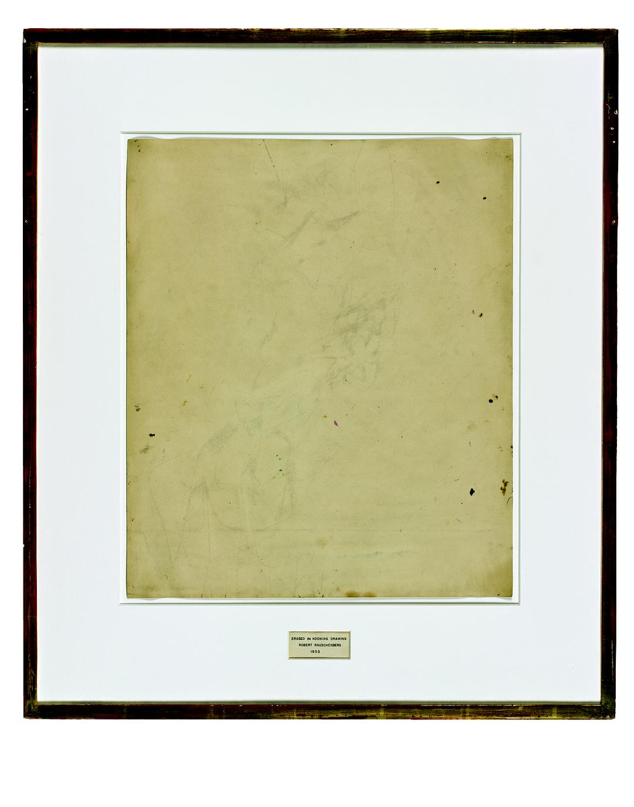
安迪·沃霍尔《可口可乐》1960
安迪·沃霍尔《热水器》1961
安迪·沃霍尔《金宝汤罐头》1962
未未艾 《一亿颗葵花籽》2010

安迪·沃霍尔《玛丽莲双联画》1962－书中彩图25
安迪·沃霍尔《超人》1961
罗伊·利希滕斯坦《嘭！》1963－书中彩图26
罗伊·利希滕斯坦《笔触》1965
彼得·布莱克《帕伯军士孤独之心俱乐部乐队》披头士专辑封面

克拉斯·欧登伯格《两个一切都有的芝士汉堡（双份汉堡）》1962
389 第十七章 观念主义/ 激流派/ 贫穷艺术/ 行为艺术：心灵游戏，1952 年至今
保拉·皮维《1000》2009年在泰特现代美术馆
切尔多·梅雷莱斯《挥发物》装置作品
玛丽娜·阿布拉莫维奇《艺术家在现场》2010
艾伦·卡普罗《6处18次即兴表演》1959
伊夫・克莱因《国际克莱因蓝IKB》
卢齐欧·冯塔纳《空间概念：等待》1960
米开朗基罗·皮斯特莱托《报纸球》1966
米开朗基罗·皮斯特莱托《行走的雕塑》1967 行为艺术

米开朗基罗·皮斯特莱托《破衫中的维纳斯》1967
简尼斯·库奈利斯《无题（12匹马）》1969 装置艺术

约瑟夫·博伊斯《一群》1969
约瑟夫·博伊斯《我爱美国，美国爱我》1974 行为艺术

约瑟夫·博伊斯《怎样向一只死兔子解释绘画》1965
小野洋子《切片》1964
布鲁斯·瑙曼《未能在工作室漂浮》1966
布鲁斯·瑙曼《在广场周边跳舞或锻炼（广场舞）》1967
弗朗西斯·阿里斯《收藏家》1990-1992
弗朗西斯·阿里斯《重演》2001
理查德·朗《走出来的线》1967
罗伯特•史密森《螺旋形的防波堤》1970
415 第十八章 极简主义：无题, 1960—1975
唐纳德·贾德《无题》（Untitled）1972
唐纳德·贾德《无题（堆叠）》1967
弗兰克·斯特拉《理性与卑劣的联姻2》1959
贾斯培·琼斯 《目标与旗帜》

弗兰克·斯特拉《鬣狗爵士舞》1962
卡尔·安德烈《144块镁方砖》1969
丹·弗莱文《献给 V·塔特林之纪念碑 1》1964

索尔·勒维特《序列工程 1 （ABCD）》 1966

435 第十九章 后现代主义：假身份，1970—1989
453 第二十章 今日艺术：名利场，1988—2008 至今
卡斯顿·霍勒-滑梯
卡斯顿·霍勒-滑梯
卡斯顿·霍勒-滑梯
卡斯顿·霍勒《决策》2015
杰夫·昆斯《天堂制造》1989
查普曼兄弟《悲惨的躯体》1996
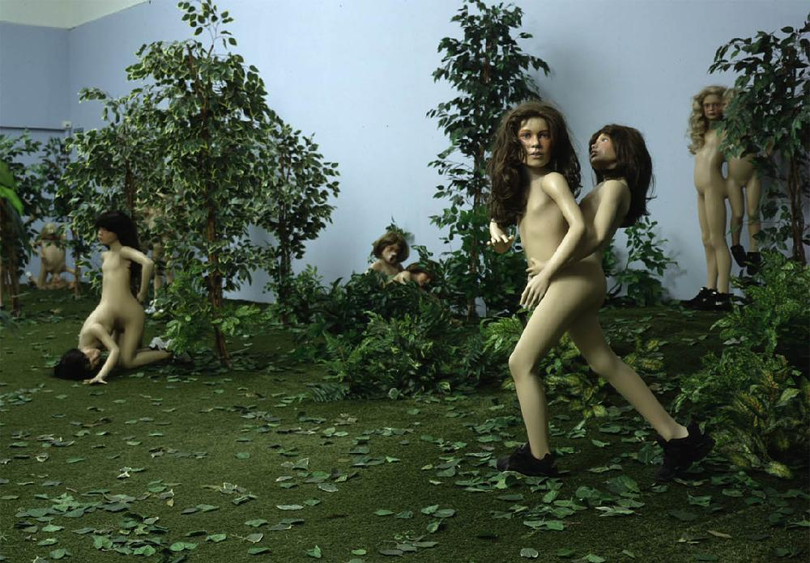
达米恩·赫斯特《现场画》1986
达米恩·赫斯特《一千年》1990

达米恩·赫斯特《生者对于死亡的无动于衷》1991
马克·奎恩 《 自己》 1991

马克斯·哈维《迈拉》 1995

达米恩·赫斯特《献给上帝的爱》2007
莎拉·卢卡斯《两个煎鸡蛋和一根烤肉串》1992－书中彩图28
莎拉·卢卡斯《裸体》1994
翠西·艾敏《1963至1995年曾经和我睡在一起的每一个人》1995－书中彩图29
翠西·艾敏《我的床》1998
翠西·艾敏 《国际酒店》1993

大卫·霍克尼《透视风格的茶画 》1961

皮埃特·蒙德里安《胜利之舞》1942-1943
村上隆 《ko小姐》 1997

村上隆《Hiropon》1997
村上隆《我的寂寞牛仔》1998
杰夫·昆斯《艺术杂志广告》1988-1999
杰夫·昆斯《天堂制造》1989
亨利·富塞利《噩梦》1781
未未艾《摔破一个汉代陶罐》1995
JR：里约贫民窟 2008

谢泼德费尔雷《服从巨人》（右）
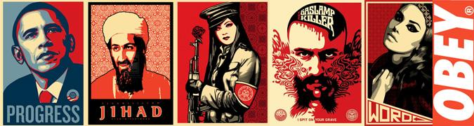
谢泼德 费尔雷《奥巴马》2008

班克斯《正在清扫的女佣》2006
489 艺术品收藏地
501 致谢
505 译名表